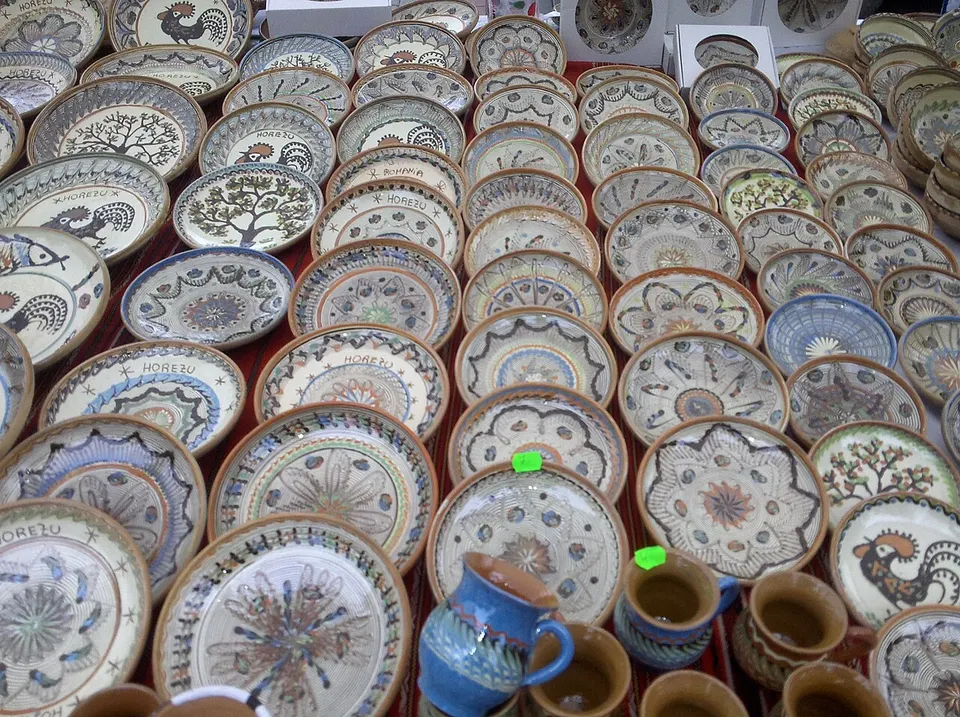
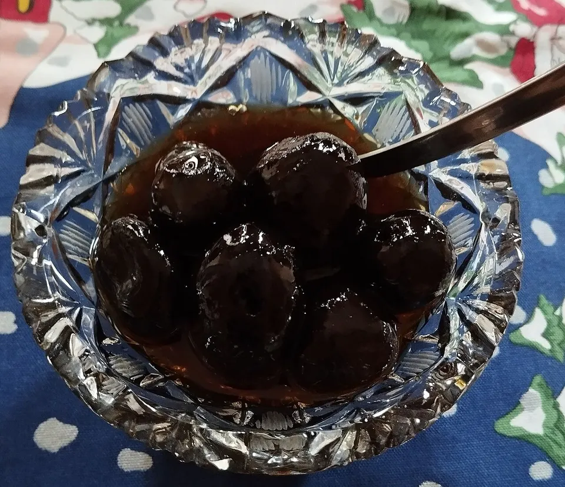
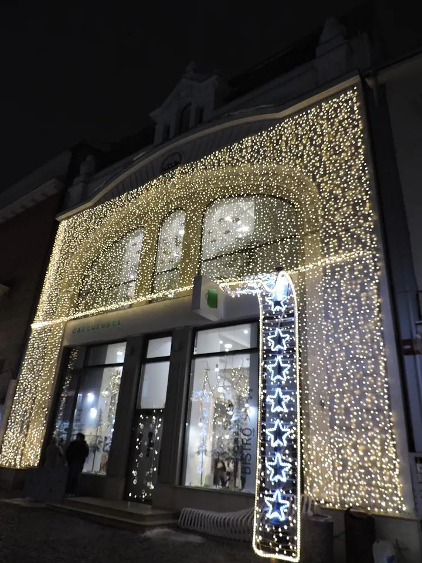

부쿠레슈티 시비우
확인- 수단
- 기차 · CFR 직행
- 소요
- 약 5시간 40분 장거리
- 환승
- 직행
5시간 30분~6시간. 버스(약 4시간 30분)나 시비우 공항 출국도 방법입니다.
공항 도시에서 첫 숙박지까지의 이동입니다.
루마니아·불가리아
Romania & Bulgaria in two weeks
트란실바니아의 요새 도시에서 불가리아의 옛 수도들까지 한 방향으로 내려가는 2주.


부쿠레슈티로 들어가 시비우·시기쇼아라·브라쇼브를 돈 뒤 다시 부쿠레슈티를 거쳐 도나우를 건너 벨리코터르노보, 플로브디프, 소피아로 이어집니다. 해외 여행사의 2주 일정과 같은 방향입니다.


지도: © OpenStreetMap 기여자
현지 14박 15일 · 시비우 2박 → 시기쇼아라 1박 → 브라쇼브 3박 → 부쿠레슈티 1박 → 벨리코터르노보 2박 → 플로브디프 2박 → 소피아 3박
도착 인천 → 부쿠레슈티 공항 → 시비우 (기차 약 5시간 40분). 도착일은 숙소 주변 위주로 가볍게.
대광장 → 평의회 탑 → 거짓말쟁이 다리 → 브루켄탈 미술관 → 아랫마을 골목.
12월 크리스마스 마켓이 루마니아에서 가장 유명합니다.
숙박: 시비우
아스트라 야외 민속박물관 → 시비엘 마을 또는(렌터카) 트란스퍼거러샨 고산도로(대체로 7~10월 개방).
숙박: 시비우
이동 시비우 → 시기쇼아라 · 기차 약 2시간 50분 확인 필요
시계탑 → 성채 광장 → 블라드 체페슈 생가 → 지붕 덮인 학생 계단 → 언덕 위 교회.
성채 안 숙소에서 묵으면 밤의 조용한 골목을 걸을 수 있습니다.
숙박: 시기쇼아라
이동 시기쇼아라 → 브라쇼브 · 기차 약 3시간 10분 확인 필요
스파툴루이 광장 → 검은 교회 → 스포리 거리(가장 좁은 골목) → 틈파산 케이블카 전망.
숙박: 브라쇼브
브란성(버스 약 45분) → 르슈노프 요새. 드라큘라 전설로 유명하지만 실제 역사는 전시에서 확인하세요.
숙박: 브라쇼브
기차 약 1시간 → 펠레슈성·펠리쇼르성 → 시나이아 수도원. 월·화요일 휴관 여부 확인.
겨울에는 포이아나 브라쇼브 스키장이 버스 20분 거리입니다.
숙박: 브라쇼브
이동 브라쇼브 → 부쿠레슈티 · 기차 약 2시간 35분 확인
립스카니 구시가지 → 스타브로폴레오스 수도원 → 카루 쿠 베레 → 칼레아 빅토리에이 → 루마니아 아테네움.
숙박: 부쿠레슈티
이동 부쿠레슈티 → 벨리코터르노보 · 버스 약 5시간 15분 확인
차레베츠 요새 → 사모보드스카 장인 거리 → 구르코 거리 → 아센 왕조 기념비 전망.
요새의 "소리와 빛" 쇼는 단체 예약이 있는 날에만 열립니다.
숙박: 벨리코터르노보
택시 10분 → 아르바나시 예수탄생 교회 벽화·콘스탄찰리에프 저택 → 트라페지차 언덕.
숙박: 벨리코터르노보
이동 벨리코터르노보 → 플로브디프 · 버스 약 4시간 일반
로마 원형극장 → 구시가지 부흥기 저택 → 네베트 테페 → 로마 경기장 → 카파나 창작 지구.
숙박: 플로브디프
바치코보 수도원 + 아세노프 요새(버스·택시), 또는 트라키아 와이너리 시음.
숙박: 플로브디프
이동 플로브디프 → 소피아 · 버스 약 2시간 15분 일반
알렉산드르 네프스키 대성당 → 성 소피아 교회 → 러시아 교회 → 세르디카 로마 유적 → 바냐 바시 모스크·광천수 샘 → 비토샤 대로.
숙박: 소피아
투어 또는 버스로 릴라 수도원(유네스코, 편도 약 2시간) → 보야나 교회와 묶는 일정이 일반적.
대중교통 직행은 하루 1편 수준이라 투어·셔틀이 편합니다.
숙박: 소피아
보야나 교회 → 국립역사박물관 → 비토샤산 알레코·황금 다리 하이킹.
숙박: 소피아
오전에 못 본 곳을 둘러보고 공항으로 이동합니다. 귀국편은 대부분 다음 날 한국에 도착합니다.
5시간 30분~6시간. 버스(약 4시간 30분)나 시비우 공항 출국도 방법입니다.
공항 도시에서 첫 숙박지까지의 이동입니다.
직행이 거의 없습니다. 버스(약 2시간)는 하루 몇 편뿐이라 시간표 확인 필요.
열차에 따라 2시간 30분~3시간 30분. 선로 공사로 지연이 잦으니 여유를 두세요.
약 2시간 30분. 카르파티아 산맥을 넘는 구간.
약 5시간 15분. 기차는 루세에서 갈아타고 편수가 매우 적습니다. 불가리아·루마니아 모두 솅겐이라 육로 국경 심사는 평소 없습니다.
약 4시간. 편수가 적어 전날 확인하세요.
1시간 간격, 2시간~2시간 20분. 기차는 2시간 30분~3시간.
국경 모두 솅겐 지역입니다.
이스탄불·프랑크푸르트·뮌헨·헬싱키·바르샤바·도하 등에서 1회 경유.
이스탄불·프랑크푸르트·뮌헨·비엔나·도하 등에서 1회 경유.
5·9월
11~3월
여름 내륙은 덥고, 루마니아 열차는 지연이 잦아 여유를 두세요.
지나가는 나라마다 머무는 기간에 맞춰 골랐고, 비슷한 상품(와인끼리, 꿀끼리 등)은 하나만 넣어 10개 이내로 추렸습니다. 기간 탭을 바꾸면 도시에 맞게 다시 고릅니다.





카드를 누르면 나라별 쇼핑·기념품 페이지에서 구매처·반입 유의사항·사진 출처를 볼 수 있습니다. 사진은 Wikimedia Commons 자유 라이선스 사진입니다.


중기·장기(7~8박) · 1개국 · 추천 5·9·10월
카르파티아 산맥 너머 색슨인의 요새 도시 세 곳. 루마니아 여행의 대표 동선.
.jpg?width=960)
_exterior_-_IMG_01.jpg?width=960)

장기(8~9박) · 1개국 · 추천 7·8·9월
"세계 최고의 드라이브 길"로 불리는 고산도로를 넘어 트란실바니아를 한 바퀴 도는 여름 로드트립.

_(37448099450).jpg?width=960)

단기·중기(4~5박) · 1개국 · 추천 4·5·10월
수도와 유네스코 수도원, 로마 극장이 남은 고도. 4~6박으로 보는 불가리아 입문.

_-_Tsarevets.JPG?width=960)
중기·장기(7~8박) · 2개국 · 추천 5·9월
도나우를 건너 불가리아의 옛 수도들을 따라 내려가는 두 나라 코스.
정보 확인일 2026-11-21